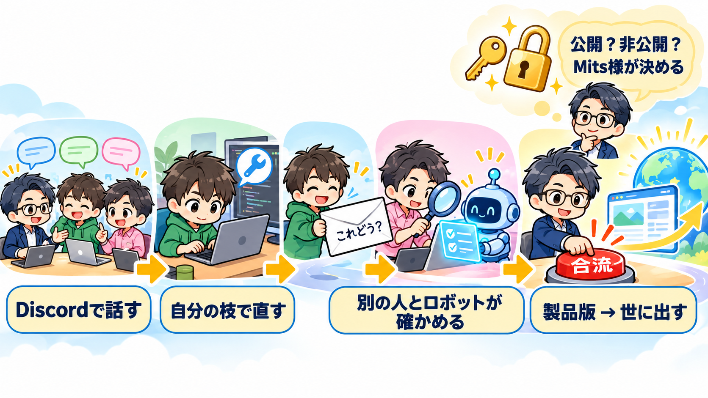
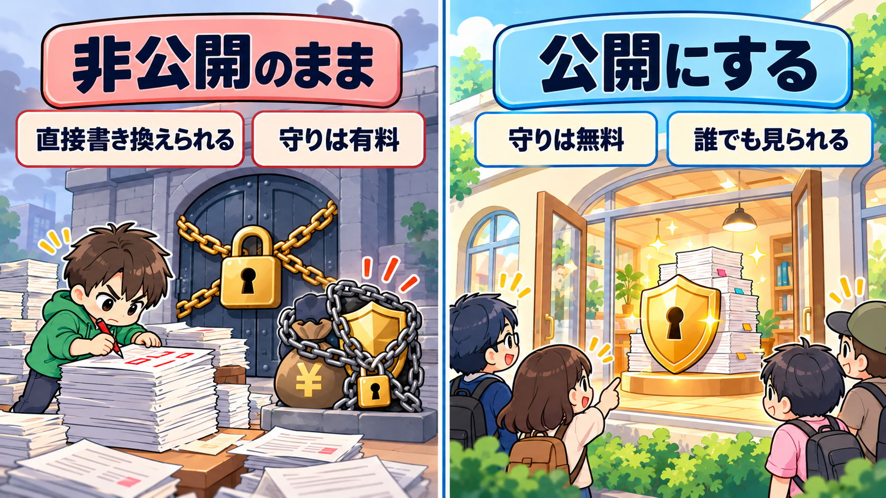

運転台 開発環境の整備プラン
① 結論 ── 何をどの順で整えるか
流れは1本にする：「Discord で話す → GitHub で作る → 仲間が確かめる → 本流（main）に合流 → Mits様の製品版に入る → 世に出すのは Mits様が決める」。最後の2つは今の決まりのまま変えない。
- 段0 今の作業場を、人を入れられる状態にする（Mits様の決定は要らない）── 作業場の未記録23件の片付け、リポジトリに入っている社内の記録（
.claude/の8ファイル）を外す、共同開発者向けの決まり1枚（CONTRIBUTING.md）の下書き - 段1 Discord を開発の場として最小限に整える（3人）── チャンネルは3つまで。会話と「決まったこと」を分ける
- 段2 GitHub に森田さん・棚原さんが入る── ここは Mits様の「公開の形」の決定待ち。今の置き場は非公開で、本流を守る設定が使えない（実測で 403）。招くと過去の履歴（実データが入っていた見本の帳簿の旧版）も見える
- 段3 合流の確かめを自動にする── 枝から送られた変更（Pull Request）ごとに GitHub 上でテストが走る形を足す。今は Windows の組み立てしか走っていない
- 段4 3人で1往復ずつ試す── 森田さん・棚原さんが小さな直しを1本ずつ送り、別の1人が確かめ、本流に入り、Mits様の製品版に入るところまで
- 段5 4人目以降に広げる── 段の数と条件は Mits様の決定待ち（保留）
段0・段1・段3 の下書きは、Mits様の保留に触れずに進められる。段2 から先は「Mits様が決めること」の1番が決まってから。

② 図 ── 流れと、誰が何を持つか
「計器に載せるか＝Mits様だけ／コードを取り込むか＝参謀」の分け方は 運転台の大きな方向性 4節（project_untendai_daihoshin.md）。Discord の場を運転台改善が持つのは 決定の記録 2026-10-15 17:40。3人が互いに開発者でありレビューする形は ChatGPT 会話 6ad09c7c の発言17・19。
③ 今の実測（2026-10-15 19時台・読み取りのみ）
GitHub：mits32163216/untendai
| 項目 | 実測の値 | 叩いたコマンド |
|---|---|---|
| 公開・非公開 | PRIVATE（"isPrivate":true・"visibility":"PRIVATE"） | gh repo view mits32163216/untendai --json visibility,licenseInfo,defaultBranchRef,hasIssuesEnabled,hasDiscussionsEnabled,… |
| ライセンス | "licenseInfo":{"key":"apache-2.0","name":"Apache License 2.0"} | 同上 |
| 既定の枝 | "defaultBranchRef":{"name":"main"} | 同上 |
| Issues | "hasIssuesEnabled":true（件数 0：[]） | 同上／gh issue list --state all |
| Discussions | "hasDiscussionsEnabled":false | 同上 |
| Projects・Wiki | "hasProjectsEnabled":true・"hasWikiEnabled":false | 同上 |
| Pull Request | 0件（[]） | gh pr list --state all |
| 本流の保護 | 使えない："Upgrade to GitHub Pro or make this repository public to enable this feature." "status":"403" | gh api repos/mits32163216/untendai/branches/main/protection |
| Rulesets | 同じ 403（同じ文） | gh api repos/mits32163216/untendai/rulesets |
| 共同作業者 | {"login":"mits32163216","role_name":"admin"} の1件だけ | gh api repos/…/collaborators |
| 招待中 | 0件（出力なし） | gh api repos/…/invitations |
| .github/ | .github/workflows/build-windows.yml の1本だけ（ISSUE・PR のひな形なし） | gh api repos/…/contents/.github/workflows |
| Actions | {"name":"build-windows","state":"active"}・"enabled":true。起動条件は workflow_dispatch と push: branches: [ main ]。中身は Windows の組み立てだけで、テストは走らない。直近6回は全部 workflow_dispatch・success（最終 2026-08-26） | gh api repos/…/actions/workflows・gh run list |
| リモートの枝 | main の1本だけ | gh api repos/…/branches |
| ラベル | GitHub の既定10個（bug・documentation・duplicate・enhancement・good first issue・help wanted・invalid・question・wontfix・accessibility） | gh label list |
| 最新の Release | 運転台 v1.73.28 Latest 2026-09-25（手元の版は 1.76.7。間は世に出していない） | gh release list |
| そろっている書類 | LICENSE・README のみ。"contributing":null・"issue_template":null・"pull_request_template":null・"code_of_conduct":null | gh api repos/…/community/profile |
ChatGPT 会話と食い違う所。発言11で ChatGPT は ZIP を読んで「Apache License 2.0 が設定済み」と書いた。ライセンスの設定は事実だが、置き場は非公開。手元の 運転台_共同開発のためのローカル情報整理_20261014.md（作業場の直下・未記録）も「GitHub の公開リポジトリも存在し」と書いているが、実測は PRIVATE。
本流の保護の 403 は「無い」ではなく、料金の段の制約。返ってきた文は「Pro に上げるか、公開すれば使える」。権限の不足でも読み込み途中でもない（同じトークンで collaborators・workflows は読めている）。
個人の置き場では、招いた人に「読むだけ」を渡せない。GitHub の説明：「In a private repository, repository owners can only grant write access to collaborators.」（docs.github.com・個人アカウントのリポジトリの権限）。招いた時点で森田さん・棚原さんも main に直接入れられる。

作業場：/Users/nishidamitsuhiro/untendai-seiri
| 項目 | 実測の値 |
|---|---|
| remote | origin https://github.com/mits32163216/untendai.git |
| 未 push | git rev-list --left-right --count origin/main...main → 0 0（fetch 後）。最新 2be19cf 2026-10-14 17:00 |
| 未記録の変更 | git status --porcelain 23行（変更7・未追跡16。src-tauri/resources/sample.db・tools/build-client.sh などを含む） |
| 手元の枝 | main のほか demobuild・freee・freee-win・marketing・oem-shoukai-code・taiki-honntai・wip-freee-20260925。7つの作業場が1つの .git を分けて使う（git worktree list）。リモートに出ているのは main だけ |
| 版 | src-tauri/tauri.conf.json の "version": "1.76.7" |
| LICENSE・NOTICE・README・CLAUDE.md・CHANGELOG | 5つともある。CONTRIBUTING.md は無い（No such file or directory） |
| テスト | src-tauri/tests/ に5本。#[test] の数 320（src-tauri/src 内・grep）。要件定義書の実測は 317 passed・11 ignored（2026-10-14）。今回は走らせていない |
| commit 前の見張り | git config core.hooksPath → tools/hooks（この Mac だけの設定）。見張りは ①配布物に他人の名前 ②版 ③テスト。①の一覧は $HOME/.claude/untendai_haifu_kinshi_go.txt でリポジトリの外。一覧が無い作業場では①は何もしない（hook のコメントどおり） |
| リポジトリに入っている社内の記録 | git ls-files .claude → 8ファイル（BS-jikki-kenshu の記録2・リンク点検の記録5・スキル1） |
| CLAUDE.md の中の手元のパス | /Users/nishidamitsuhiro が12行。外の人の手元では辿れない |
| 見本の帳簿の履歴 | src-tauri/resources/sample.db は記録上12回変わっている。2026-10-03 の引き継ぎ書に「履歴の旧 sample.db 11版に実データ → 公開するなら新しい置き場を履歴1からが方向性（Mits様判断待ち）」。.gitignore は *.db を止めているが、sample.db だけは記録に入っている |
| すでに渡した物 | 森田さんへ ZIP untendai_source_github_main_20261014.zip（main 075f348）を Mits様が Messenger で添付済み。中に遠藤さん・棚原さんの名前の注記と ac_nishida@ のメアドがある（引き継ぎ書 2026-10-15）。sanbo.rs の ac_nishida は今も7行 |
Discord
測っていない（この回は Chrome を使わない決まりで、Discord の道具はこの回つながらなかった）。記録の上の状態：サーバー「経営の運転台 開発（仮）」、チャンネルは作ったときの既定（テキスト #一般・ボイス 一般）、BOT なし。森田さんの参加は、運転台改善からの発注書に「2026-10-15 17:59 に参加済み」とある（決定の記録は2599行目までで、17:38 の招待までしか書かれていない）。棚原さんへの招待の記録は見当たらない。
④ 段ごとの中身
段0 今の作業場を、人を入れられる状態にする
やること
- 作業場の未記録23行を、記録するか外すかに分ける（他のセッションの作業中のものがあるので、持ち主を確かめてから）。理由森田さんたちの変更が main に入ると、Mits様の手元の未記録の直しとぶつかる（記録：2セッション同時編集で片方が消えた事故）
- リポジトリから
.claude/の8ファイルを外し、.gitignoreに足す。理由社内の検収の記録・リンク点検の記録で、共同開発者に要らない。招いた瞬間に読める - 共同開発者向けの決まり
CONTRIBUTING.mdを1枚だけ下書きする（中身は下の「やってはいけないこと」と、流れの6行と、手元の準備）。理由ChatGPT 発言11「公開されている資料だけで、何をしてはいけないのか判断できる状態にする」・発言14「最初は1〜2ページ程度の禁止事項集で十分」。大きな方向性4節「手引きを厚くしない」とも合う - リポジトリの
CLAUDE.mdは消さずに置き、冒頭に「共同開発の人は先に CONTRIBUTING.md」を1行足す。手元のパスの12行は、外の人が読んでも迷わない書き方に直すか、Mits様の側の CLAUDE.md へ移す。理由森田さんたちも各自の AI にリポジトリを読ませる（会話 08de4「ChatGPTで構想・相談 → GitHub → Codex → Claude」）。AI が辿れないパスを読むと、無い物を探しに行く - README の食い違いを直す：「いまはマネーフォワードだけ」→ freee の取り込みが製品版に入っている（v1.75.9 から）。理由ChatGPT 発言14が指摘・案件 CLAUDE.md「人に配るのは製品版」節で確かめられる
- commit 前の見張りを、他の人の手元で動く形にする：版の見張りは
marketing枝と同じく main 以外では版を求めない（並行の Pull Request が同じ版番号を取り合わないため。版は合流させる側がrelease.shで上げる）。他人の名前の見張りは一覧を配れないので、合流の前に Mits様の側で走らせる形に置き直す
終わったと言える状態：git status --porcelain が0行／git ls-files .claude が0行／CONTRIBUTING.md の下書きがある（まだ main に入れない）／README に「マネーフォワードだけ」が0件。
Mits様が決めること：なし。直しは「Mits様の製品版に入れる」まで（世に出さない）。
段1 Discord を開発の場として最小限に整える
やること（運転台改善のセッションが持つ）
- テキストのチャンネルを3つにする：#一般（相談・雑談・困りごと・進み具合。既定のものをそのまま使う）／#決まったこと（決まったら1行。誰でも書いてよいが、話し合いはしない）／#お知らせ（新しい版が Mits様の製品版に入った・世に出た、を流す）。理由会話 6ad09c7c 発言19「極力やりやすく簡単にする」→ ChatGPT「最初から細かいチーム分けや会議、報告義務は設けません」。会話 08de4「会話の履歴と、正式に決定した仕様を区別することが重要」
- 領域ごとの8チャンネル（会計・UI-UX 等）は作らない。理由領域の分け方は保留の「外に開く領域」に当たる。人数が3人で分ける必要がまだ無い（ChatGPT 発言13「最初から8つの開発チームを作る必要はない」）
- #決まったこと に書いたもののうち、コードの決まりになるものは GitHub の
CONTRIBUTING.mdか Issue に写す。理由08de4「Discordで何時間議論しても、最終的な決定事項がGitHubなどの正本に反映されなければ、開発の認識がずれてしまいます」 - 棚原さんを招く。理由3人で始める形（発言17・19）。招待は人に届くので、送るのは Mits様の合図のあと
終わったと言える状態：テキストのチャンネルが3つ／森田さん・棚原さんの2人が参加済み／#決まったこと に最初の1行がある。
Mits様が決めること：サーバーの呼び名（保留3番。決まるまで「（仮）」のまま）。チャンネルの数と名前は上で決めた。
段2 GitHub に森田さん・棚原さんが入る
この段は「Mits様が決めること」1番（公開の形）が決まるまで動かない。決まった形ごとに、やることが分かれる。
| 決まった形 | やること | 本流を守る方法 |
|---|---|---|
| 今の非公開の置き場に招く | 2人を collaborator に招く。履歴（旧 sample.db の実データを含む）も2人に見える | 設定では守れない（403）。「main に入れるのは Mits様の側だけ」を CONTRIBUTING.md の決まりにし、push の記録を毎回見る。設定で守るなら有料の Pro（お金が動く） |
| 履歴を新しくした置き場を作って招く | 今の main の中身から、見本の帳簿の実データ・社内の記録を除いた形で、履歴1から始める。更新の仕組み（updater/index.js が Release を読む先）と release.sh の push 先をどちらにするかを同じ回に決める | 非公開なら上と同じ。公開なら無料で保護が使える |
| 公開する | 上の「履歴を新しくした置き場」を先に済ませてから公開（今の履歴のまま公開しない） | main の保護：Pull Request 経由のみ・確かめ1人以上・テスト合格を必須 |
どの形でも同じにすること（こちらで決めた）
- 枝の名前：
yoshi/〈短い中身〉・tana/〈短い中身〉。Mits様の側は今のまま main で直す。理由release.shは main でしか動かない（同 141〜151行）。Mits様の流れを変えずに、外の人の変更だけが Pull Request を通る - 合流させる人：Mits様の側だけ（参謀がコードを読み、計器に載せるかは Mits様）。理由ChatGPT 発言14「本流への統合権限と、一般利用者へのリリース権限を分ける」・大きな方向性4節
- 合流のあと：Mits様の手元で
git pullしてからrelease.sh --自分だけ。理由release.shは手2でgit push origin mainを打つ。GitHub 上で合流した分を取り込まずに走らせると push が止まる - Issue の使い方：やることの記録（不具合と、作ると決まったもの）。思いつき・相談は Discord。ラベルは今ある既定の10個だけで始める。理由発言19「GitHub：やることの記録、コード管理、レビュー、統合」。領域のラベル（internal:〜/external:〜、発言13）は保留2番が決まってから
- Discussions・Projects・Wiki：使わない（Discussions は今 false のまま）。理由相談は Discord に1本化。置き場を増やすと正本が割れる（08de4「仕様書の正本を複数の場所に分散させない」）
終わったと言える状態：森田さん・棚原さんの2人が手元にソースを取り、README どおりに tauri dev で起動でき、cargo test が通る（2人とも Mits様の手を借りずに。ChatGPT 発言14③）。
段3 合流の確かめを自動にする
やること
.github/workflows/に、Pull Request ごとにcargo testと版の4か所の整合（tools/check_version.sh）を走らせる1本を足す。今のbuild-windows.ymlはそのまま。理由実測：今の Actions は main への push と手動でしか走らず、テストを含まない。ChatGPT 発言11・12・14 が同じ点を挙げている.github/PULL_REQUEST_TEMPLATE.mdに4行のチェック：変更の中身と影響する画面／テストを足したか／やってはいけないことに当たらないか／確かめた人。理由ChatGPT 発言12「統合の品質条件」4つ.github/ISSUE_TEMPLATE/に不具合の書き方1本：OS・アプリの版（必須）・起きたこと・期待した動き・画面写真。理由モデリング_GitHubのバザール型 4節4番（Joplin・AppFlowy の形）- 他人の名前の見張り（一覧は配れない）は、合流の前に Mits様の側の作業場で走らせる手順を、運転台改善の手順に1行足す
終わったと言える状態：試しの Pull Request 1本で、テストが GitHub 上で走って合格の印が付く。非公開のままなら、使った分（分）を1回目に測って記録する（非公開の置き場は Actions の無料枠に上限がある）。
Mits様が決めること：なし（非公開のままで無料枠を超える場合だけ、お金が動くので「決めること」6番）。
段4 3人で1往復ずつ試す
やること
- 森田さん・棚原さんが1本ずつ、小さな直しを Issue に書く（候補：README の直し・表示の小さな直し・テストを1本足す。経営指標の定義には触れない）
- 自分の枝で直して Pull Request を送る → 作った人以外の1人が確かめる → 自動のテストが合格 → Mits様の側で合流
- Mits様の製品版に
release.sh --自分だけで入れ、BS-jikki-kenshu が実機で確かめる。4本のアプリへの写しは今の決まりどおり Mits様の側で - Discord の #お知らせ に「製品版に入った」を1行。世に出すのは Mits様が「出す」と言われたとき
終わったと言える状態：Pull Request が2本（森田さん1・棚原さん1）main に入り、Mits様の製品版の版に含まれている。詰まった所を #決まったこと と CONTRIBUTING.md に写した。理由ChatGPT 発言12 アクション5・発言14「最低限の安全条件を整えて、小さく始めて実証する」
Mits様が決めること：直しを計器に載せるか（いつもどおり）。
段5 4人目以降に広げる
やること：新しい人は段2の「終わったと言える状態」（自分で起動・テスト）を1人で通せたら、Issue を1本取って段4と同じ1往復をする。流れは変えない（発言19「人数が増えても基本の流れを変えずに拡大する」）。
終わったと言える状態：空欄（段の数と条件が保留のため）。
Mits様が決めること：保留4番・5番。
今の決まりと、外の人が入る形がぶつかる所
| 今の決まり（出どころ） | ぶつかる所 | 合わせ方 |
|---|---|---|
| アプリは4本。製品版に入れた直しは、その回のうちに4本へ（案件 CLAUDE.md 358行〜） | freee・marketing などの枝は Mits様の Mac にしか無い。外の人は main しか見えない | 外の人は main だけを触る。4本への写しは合流のあと Mits様の側で（今の手順のまま） |
release.sh は main でのみ。手2で push（同 2137行〜） | GitHub 上で合流した分が手元に無いと push が止まる | 合流のあと git pull してから release.sh。外の人は release.sh を叩かない |
| 製品版に先に入れ、まとめて世に出す（同 461行〜） | 「main に入った＝お客様に届いた」と外の人が受け取りうる | CONTRIBUTING.md に3段を書く：main に入る／Mits様の製品版に入る／世に出る（Mits様が決める） |
| 版は commit ごとに上げる（pre-commit ②） | 並行の Pull Request が同じ版番号を取り合う | main 以外の枝では版を求めない。版は Mits様の側で上げる |
| BS-jikki-kenshu の実機検収・顧客や協力者向けの案内は実機で（home CLAUDE.md 裏取り原則7） | CONTRIBUTING.md・README は協力者向けの案内に当たる | 出す前に BS-jikki-kenshu が、書いた手順（clone→起動→テスト→Pull Request）を1手ずつ実機で通す |
| お客様・Mits様の実データを試験に使わない（同 708行・1260行） | 森田さん・棚原さんは自分の会社の数字を入れて試す。旧 sample.db の履歴に実データ | テスト・見本は架空のデータだけ（sample_db_no_mitsdata.rs が既にある）。各自の帳簿はリポジトリに入れない（*.db を止める）。履歴は保留1番で扱う |
秘密情報を入れない（.gitignore の *.key・.wrangler） | 他人の名前の見張りの一覧はリポジトリの外で、他の人の手元では動かない | 合流の前に Mits様の側で走らせる |
| 開発中の .app は起動しない（同 351行） | 外の人は tauri dev で起動して確かめる | これは Mits様の Mac の Keychain の事情。外の人の手元は README の tauri dev でよい。CONTRIBUTING.md に「画面だけなら python3 -m http.server 8791」も書く |
やってはいけないこと ── CONTRIBUTING.md の下書きの材料
すでに Mits様が決めた決まりから写す。ChatGPT の初期案（発言9・12）とほぼ重なる。新しい決まりは足さない（発言9「禁止事項も必要以上に増やさない」）。
| # | やってはいけないこと | 出どころ（Mits様が決めた所） |
|---|---|---|
| 1 | 画面が良し悪しを判定する・経営判断を代わりに決める（考える材料・学び先は入れてよい） | 案件 CLAUDE.md「基本コンセプト」「サジェストは入れる を消さない」（2026-08-31） |
| 2 | 経営指標の定義を、相談なく変える | 大きな方向性4節「計器に載せるか＝Mits様だけ」 |
| 3 | 利用者の帳簿をパソコンの外へ送る（AI-Mits の相談を除く） | README「データはあなたのパソコンの中だけ」 |
| 4 | 実在の人・会社の名前、実データ、鍵をコード・見本・テストに入れる | 案件 CLAUDE.md 708行・1260行／pre-commit ①／.gitignore |
| 5 | main に直接入れる・世に出す（Release・latest.json を作る） | 同 461行「世に出す」の内部基準 |
| 6 | 会員向けのナレッジ・教材をリポジトリに入れる | NOTICE「入っていないもの」 |
Mits様が決めること（値はこちらで埋めていない）
| # | 決めること | 記録の上の今 | 決まると進む所 | 値 |
|---|---|---|---|---|
| 1 | GitHub での公開の形 | 2026-09-26「現段階ナシ」（session-log 2026-09-26_1210）。履歴を新しくした置き場の話は 2026-10-03 から判定待ち | 段2（招き方・本流の守り方・履歴の扱い） | （空欄） |
| 2 | 外に開く領域（森田さんの依頼⑦） | 未回答。ChatGPT 発言13の内部4・外部4は森田さんの初期案 | Issue の領域ラベル・CONTRIBUTING.md の「触る前に相談する所」 | （空欄） |
| 3 | Discord の呼び名 | 「経営の運転台 開発（仮）」。仲間の呼び名の保留と同じ | サーバー名から（仮）を外す | （空欄） |
| 4 | コミュニティ3層（初期開発の仲間・有料利用者・無料利用者）と場の関係 | 2026-09-14「利用者総数でコミュニティ化」。1つの場か分けるかは未言及 | 利用者をこの Discord に入れるか・別に立てるか | （空欄） |
| 5 | 段の数と条件 | 2026-09-14「お金では無いが、同様にレベル分け」。段の数・条件・受け取るものは未決 | 段5（4人目以降の入り方） | （空欄） |
| 6 | お金が動くもの（1番が非公開のままのときだけ出る）：本流の保護のための有料の段・Actions の無料枠を超えた分 | 実測 403「Upgrade to GitHub Pro or make this repository public」 | 段2・段3 で設定で守るか | （空欄） |
⑤ 会話から取ったもの／取らなかったもの
ChatGPT の会話の中の「決めた」「採用してよい」は ChatGPT の提案で、Mits様の決定ではない（会話の中でも「まだ西田さんの承認を受けた正式ルールではありません」発言12）。
会話の時点ごとの変わり目
| 時点（共有リンク） | 何が変わったか |
|---|---|
| 6acf0086（7往復） | 発言3：「コアは非公開・変更権限を限定」と Organization に core-private 等を分ける案 → 発言4（要件定義書を読んで）で ChatGPT 自身が「コアを非公開にすることを前提とした共同開発方式は修正が必要」と訂正。発言7：西田さんへ ZIP を頼む文と「⑦外部開発者に開放したい領域」 |
| 6acef342（9往復） | 分かれ道：発言8 森田さんのメモ（解析5項目）・発言9 依頼文の清書。「解析が終わる前に公開する必要はありません」 |
| 6acf012d（15往復） | 発言8 手本4つ（Odoo/OCA・ERPNext・Grafana・Home Assistant）／発言9 「やってはいけないことだけ決める」への賛成と禁止事項の初期案6つ／発言10 claude-nishida は 404／発言11 ZIP を解析（Apache-2.0・CONTRIBUTING 無し・PR ごとのテスト無し）／発言12 3つの作業・禁止事項案（2つ目の版）・品質条件4つ／発言13 内部4・外部4／発言14 ネック3つ「小さく始めて実証」／発言15 ZIP のパスの確認だけ |
| 6ad08de4（1往復） | 森田さんの別の会話：Discord＋GitHub＋必要なら Google Drive。会話と決定を分ける |
| 6ad09a71（18往復） | 発言15〜18：西田さん（Mits様）が書き込み。共有リンクでは2人が同じ会話を続けられない → グループチャットの案 → 08de4 を貼って、Discord＝会話・GitHub＝正本・ChatGPT＝支援・Drive＝必要時、8チャンネルの案、人と AI の混合の開発 |
| 6ad09c7c（19往復・最新） | 発言15・16・18 は画像だけの返答（中身は文字として取れておらず、読めていない）。発言17：Mits・Tana・Yoshi が互いに開発者でありレビューする関係。発言19：「Discordで話す → GitHubで作る → 仲間が確認する → 本流に合流する」・チーム分け／会議／報告義務なし |
取ったもの
- Discord＝会話、GitHub＝作業と記録、の分け方（08de4・09c7c 発言19）→ 段1・段2
- 決まったことは正本へ写す（08de4）→ #決まったこと と CONTRIBUTING.md
- やってはいけないことだけ決めて、あとは自由（発言9。森田さんの発言）。禁止事項は増やさない → 上の6行
- 統合の品質条件4つ（発言12）→ Pull Request のひな形
- 本流への統合と世に出すことを分ける（発言14）→ 今の「世に出す」の内部基準と同じ向き
- 第三者が手を借りずに起動〜テスト〜Pull Request まで通せるか確かめる（発言14③）→ 段2の終わりの状態
- README と実装の食い違い（マネーフォワードだけ／freee もある）（発言14）→ 段0
- 3人が互いに開発しレビューする形（発言17）・極力簡単（発言19）→ 図と段1・段4
- コードの分割・プラグインの仕組みは今は決めない（発言9・14）→ この計画に入れていない
取らなかったもの
- 「コアは非公開」と Organization に core-private・developer-kit・community-extensions を分ける案（発言3）── ChatGPT 自身が発言4で訂正。今は3人で、置き場を増やすと正本が割れる
- 内部4・外部4の8領域ラベルと8チャンネル（発言13・09a71 発言18）── 外に開く領域は保留2番。Mits様の決定より先にラベルで形を作らない
- 30日プラン・7段階（発言2）── 新しくアプリを作る前提の一般論。運転台はすでに 1.76 まで動いている
- ChatGPT のグループチャットを共有の場にする案（09a71 発言15・16）── Mits様が Discord に決めた（2026-10-15）
- Odoo/OCA・ERPNext・Grafana・Home Assistant を手本にする（発言8）── 読む材料には残す。写す手本は モデリング_GitHubのバザール型（1人で始めたデスクトップアプリ8本）の方が運転台に形が近い
- 「Apache License 2.0 が設定済み」を公開済みと読むこと（発言11）── 実測は PRIVATE
- Thinking OS の役割分け（ChatGPT＝対話・Codex＝開発・Claude＝確認）（08de4）── 森田さんの ChatGPT 側の構想。各自がどの AI を使うかは決めない（発言14「開発言語やAI開発ツールの統一」は今は決めない）
- CLA（貢献者の同意書）── モデリング 4節7番：取らない側が Mits様の方針（知財も放棄してもいいくらい）と合う。ただし書くのは CONTRIBUTING.md に入れるかの話なので、段0 の下書きでは触れない
記録の上で気をつける1点（決定ではない）：大きな方向性4節・9節（2026-08-28・09-14）は「貢献者は当てにしない設計」「共同開発ではない」と書いている。2026-10-15 の Mits様の言葉は「今後、3人目4人目の共同開発者が入ってくる」。この計画はその新しい言葉に沿って、手引きは1枚に留める形にした。
⑥ 出どころ一覧
- ChatGPT 会話6本（全文の写し・作業用の場所）：chatgpt_6acf0086_zenbun.md／chatgpt_6acef342_zenbun.md／chatgpt_6acf012d_zenbun.md／chatgpt_6ad08de4_zenbun.md／chatgpt_6ad09a71_zenbun.md／chatgpt_6ad09c7c_zenbun.md（ユーザー発言 7＋9＋15＋1＋18＋19＝69件）
- /Users/nishidamitsuhiro/My Drive/claude-nishida/.claude/memory/project_untendai_daihoshin.md（1節・4節・7節・9節「保留」「仲間との情報共有の場」）
- /Users/nishidamitsuhiro/My Drive/claude-nishida/MITS-ALL/経営プロジェクト/経営の運転台/モデリング_GitHubのバザール型_20261014.html（4節・5節）
- /Users/nishidamitsuhiro/My Drive/claude-nishida/MITS-ALL/経営プロジェクト/経営の運転台/要件定義書_運転台_20261014.md と 要件定義書_運転台_1-6_20261014.md（2節・5-7・5-8・6-5・7節）
- /Users/nishidamitsuhiro/My Drive/claude-nishida/MITS-ALL/経営プロジェクト/経営の運転台/共同開発の始まり_森田さん_ChatGPT会話_20261014.md
- /Users/nishidamitsuhiro/My Drive/claude-nishida/MITS-ALL/経営プロジェクト/経営の運転台/CLAUDE.md（1〜60行・358〜500行「アプリは4本」「世に出す」・2137〜2200行・2252〜2283行・2634〜2660行「開発協力の人に渡すのは世に出る前の製品版」）
- /Users/nishidamitsuhiro/My Drive/claude-nishida/.claude/session-log/2026-10-15_1732_untendai-kaizen-hikitsugi.md／2026-10-03_2154_untendai-endo-final-mihon-marume.md（216行目以降）／2026-09-26_1210_oem-case-tsubushi.md（80行）
- /Users/nishidamitsuhiro/My Drive/claude-nishida/MITS-ALL/経営プロジェクト/司令塔/決定台帳_6セッション共通.md（2585行以降）
- /Users/nishidamitsuhiro/untendai-seiri の README.md・NOTICE・.gitignore・tools/hooks/pre-commit・.github/workflows/build-windows.yml・運転台_共同開発のためのローカル情報整理_20261014.md
- gh（2026-10-15 実測）：repo view・branches/main/protection・rulesets・collaborators・invitations・contents/.github・actions/workflows・actions/permissions・run list・issue list・pr list・label list・release list・community/profile
- GitHub の説明（個人アカウントのリポジトリの権限）：
https://docs.github.com/en/account-and-profile/reference/permission-levels-for-a-personal-account-repository